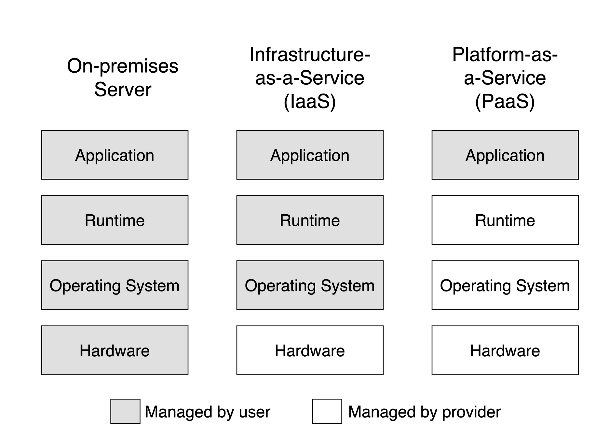
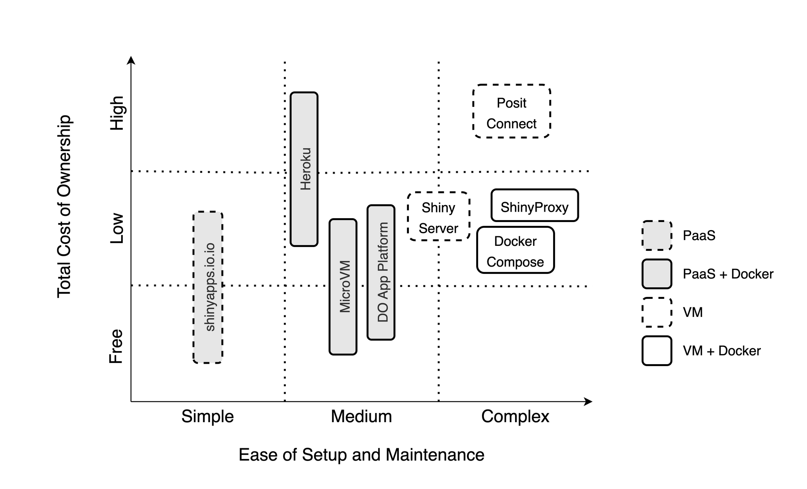

Chapter 8 A Review of Shiny Hosting Options
This chapter expands on Chapter 7 which explains how to share your Shiny app to a wider audience. Reading this chapter will help you explore the different options, accounting for factors like costs, skill level, and time, for hosting your Shiny app.
In the previous parts of the book you’ve acquired all the tools and skills needed to deploy and host your Shiny app. From this part, you’ll learn how the many hosting options work. In this chapter, we want to build the intuition behind the different kinds of hosting options and choosing the option that best suits your needs. This review is going to provide you with a framework that you can use now, and use again later if ever your needs have changed.
8.1 Hosting Patterns for Shiny Apps
Web applications can run statically or dynamically. If running statically, then a backend server is not required as all the necessary content is pre-generated. However, dynamic web applications require a backend server to render pages.
The pros of hosting an static app include a small app size and fast loading speed, the ability to be hosted for free, improved search engine optimization (SEO), and content decoupling. However, the cons are that the app is the same for all users and not reactive. This is the limitation that Shinylive solves using WebAssembly (Wasm) to add the reactivity to the client side (see Section 5.1). These static Shinylive apps can be hosted cost effectively and easily compared to dynamic Shiny apps. Application loading times might depend on how the content is bundled and the specifications of the client computer.
The benefit of a dynamically hosted app is the provision of user-specific content along with full reactivity facilitated by websockets. However, the drawbacks include the tendency to be resource-hungry, slow initial loading times, challenges with search engine optimization (SEO, i.e. bots can’t crawl a page that is not yet rendered), more complex hosting requirements, and the high performance costs.
Both static and dynamic apps can be hosted on platforms, or servers that you manage. We will use the term virtual machine (VM) and server interchangeably, although a server might mean a virtualized piece of hardware in the cloud (VM), or a physical server on premises. We are not giving recommendations regarding bare metal server setup. But when you start with an Ubuntu operating system, the management of a physical server and a VM are almost identical.
Hosting platforms (platform-as-a-service, PaaS), like shinyapps.io, aim to remove most of the difficulties associated with setting up a server and the ongoing maintenance. Platforms also provide some security guarantees out of the box. What is included and how much hosting on a platform might cost vary widely. Most platforms offer free hosting for static content, including Shinylive apps. Certain platforms, like shinyapps.io or Fly offer dynamic app hosting with some limits on resource usage.
Table 8.1 provides an overview of the hosting options we tackle in the book. The options are organized according to the backend type of the app (static or dynamic), the use of Docker, and whether it is a platform-as-a-service (PaaS) or a self-managed server. A server can also be physical server on premises or so a called virtual machine or VM for short (Fig. 8.1).

Figure 8.1: The difference between servers and platform-as-a-service.
| Type | PaaS/VM | Docker | Options |
|---|---|---|---|
| Shiny | PaaS | ✘ No | shinyapps.io |
| PaaS | ✔ Yes | DOAP, Heroku, Fly | |
| VM | ✘ No | Posit Connect, Shiny Server | |
| VM | ✔ Yes | ShinyProxy, Docker Compose | |
| Shinylive | PaaS | ✘ No | GitHub Pages, Netlify |
| PaaS | ✔ Yes | DOAP, Heroku, Fly | |
| VM | ✘ No | File server | |
| VM | ✔ Yes | ShinyProxy, Docker Compose |
The use of Docker becomes important when considering the hosting options. Most platforms provide runtime for containerized applications. As a result, the apps become more portable across platforms and cloud providers. Containerization also provide isolation to apps and users, it might be beneficial for managing the dependencies of the apps as well. But using Docker also comes with a learning curve. See more in Chapter 15.
Figure 8.2 shows the hosting options according to the level of complexity. Non-containerized platform solutions are the easiest to deal with. Medium complexity is when you are not yet managing your own server, but the platform might require containerized apps. The most complex setup, of course, is when you are managing your own server. You’ll have to deal with security, storage, backups, logging, monitoring, etc.

Figure 8.2: Hosting options for dynamic Shiny apps organized by total cost of ownership and the ease of setup and maintenance.
8.2 The Decision Framework
When searching for you first or next hosting option, you might be asking, Which option is the best?. Let us try to reframe that question a little bit: Which option is the best for what? You could say, for example, that I want to host my portfolio for free and I don’t care about a custom domain name. Or a nonprofit might say, We want to host our apps at low cost, we want custom domains, and we want to be able to handle surge traffic, but we don’t want to maintain any servers.
If you have been developing Shiny apps, you might already have your preferred way of deployment. But as your needs evolve, you will identify additional requirements and might find that your go-to option is not the best anymore. Then you’ll do some research and find the next option as we explained in the introduction for the hosting cycle (Fig. 1.2).
If you are not yet familiar with Shiny hosting options, you still need to make an informed choice at some point, so you are not wasting your time and effort on something that will not serve you well over the long run. Here is the 3-step process that you can follow to help you with this decision. Here are the 3 steps:
- Start with the Why?
- Define your requirements.
- Identify your constraints.
Let’s review each of these steps.
8.2.1 Start with the Why
Why do you want the app or apps deployed? Are you building a portfolio to boost your career? Are you deploying useful apps for stakeholders or clients of your organization? Are you trying to sell an app as a software-as-a-service (SaaS) offering? These are some of the common questions that you might ask when identifying the needs and constraints of your app.
Shiny developers start out as enthusiasts who develop apps for fun or to build a portfolio. There could be large number of apps that you develop as a result, but you do not necessarily expect a large number of users visiting these apps. You try to keep costs down and spare yourself the headache of maintenance (free or paid shinyapps.io). If the app is slow, or you run out of app hours, it is usually not the end of the world.
You can start a business or join an existing one that builds and hosts apps for other organizations. In this agency model, you have a growing number of apps, and a fair number of users. These users require authentication and you have a really good idea about the number of users and you can use a setup that make sense and adjust the setup as needed due to growth.
Academics and nonprofits might fall somewhere between portfolio and agency. There could be an app supporting each scientific paper. Demand might surge after a conference but is expected to die down quickly afterwards. They might maintain a few apps and host them on a platform or use university owned hardware.
You might find yourself in a situation where a company focuses on a single application or a small number of related apps. However, they have a large number of users. This is the situation when user authentication and scaling become really important.
Finding the right persona of what you need and why will lead you to the requirements behind the hosting needs of your application.
8.2.2 Requirements
Answering the Why question and finding your persona will probably reveal important details about your motivations, your users and audience, the number of apps you are going to host, etc. The answer will also bring you closer to identifying the requirements that you’ll need.
You might realize that you don’t need to host your Shiny app. For example, your app might be used on a laptop as a GUI to analyze data by non-specialists in the field without internet coverage. In this case, no need to move on to step 2, because all you need is to run Shiny locally.
However, if your answer makes it clear to you that your users will be accessing the app over the Internet, you will have a host of other requirements:
- How much memory does your app need?
- How many concurrent users are you expecting?
- Do you need a custom domain?
- Do you need HTTPS? (Everybody needs HTTPS.)
- Do you need authentication or app-level authorization?
- Do you want to host a single app or many apps? How many?
- Will you host any non-Shiny apps (Dash, Streamlit, etc.)?
- Do your users have patchy internet connection so websockets might not work well?
- Do you need admin access?
- Do you have compliance needs, i.e. specific data/server region requirements?
The following interactive table provides a feature comparison for hosting options that are available for dynamic Shiny apps. The table lists tiers offered by the same company as separate options. You can filter the table to find the options(s) that satisfy your requirements.
8.2.3 Constraints
The last step involves identifying your constraints:
- What is your budget?
- What is your current skill level?
- How much time do you have?
Recognizing these constraints will guide you towards an optimal solution.
The Total Cost of Ownership (TCO) (USD/year) covers licensing fees and operating costs for the “Number of Apps” listed in the table. Prices range quite a bit from free to the tens of thousands. Price increases with performance and with the availability of enterprise features, such as custom domains and authentication.
There might be subscription fees for PaaS and licensing fee for software you install on a VM. You pay PaaS fees in exchange for convenience. On a VM, you will have different costs that can add up quickly:
- Setup costs including your own time or fees for consultants, including customization, integration, and onboarding.
- Maintenance and support, including upgrades and updates (your time, consultants, employees).
- Operating costs for infrastructure, data storage, backup, security, compliance.
PaaS means platform-as-a-service, i.e. it is a fully managed system without you having to worry about the underlying infrastructure. This also means less control over the infrastructure, i.e. when it comes to choosing the data region where your app is served from.
Unlimited app hours are more common for self-hosted options or paid PaaS plans including a single app. The need to host multiple apps will involve some compromises. The ability to host non-Shiny apps (Dash, Streamlit, etc.) is a feature for RStudio Connect and the Docker-based options.
Time as a constraint will depend on how far your current skill level is from the level needed for a specific hosting option. You also have to consider that some options are fully managed PaaS offerings, others you have to manage, or learn how to use Docker.
If you have to develop new skills, it might take longer. If you have to manage your servers, it will take more time to get started and then you are on the hook for maintaining your setup.
Figure 8.2 gives an intuitive overview of the different options. The vertical axis represents the total cost from the table above: free, low, and high cost. The horizontal axis shows a range of skills you need to set up and manage your hosting solution. It can be as simple as pushing a button, or as complex as managing servers or cloud clusters.
The hosting options in this diagram are not separated by tiers but rather shown as spanning over a range. The fill colors identify Docker and non-Docker-based options, the stroke styling indicates the PaaS solutions.
8.2.4 Picking an Option
Use the table (the online version of the book has an interactive version of the table) to filter down the options. After identifying your needs and constraints, you should see only a few or a single option left. Look up the instructions for that option to get started.
If there is no option left in the table, then you might need to be more realistic about your expectations or relax some of your constraints. For example, to keep costs low, you could spend more time and invest in skill development. But if you have more room in your budget, you might choose a different path. You can also revise your requirements until you find an acceptable solution.
If you followed the 3-step process to collect all the information you need, it is likely that you have found an option that is best for your needs. Now go ahead and learn more about that option, deploy, and start hosting your app. That is what the rest of the book will help you with.
Shiny is a very popular interactive data application framework. As a result, new hosting options are popping up every time. We hope that the book will give you a solid foundation for such options too.
8.3 Important Prerequisites
In Chapter 2, we outlined the essential concepts of domains and hosting environments. Understanding these elements is crucial for addressing the following requirements:
- custom Domains to access your app,
- HTTPS for secure access to your app
These requirements are common features among the hosting platforms explored in Chapter 19. They are also important for creating a polished application solution for other users to access your app.
A registered domain name can be useful for apps hosted on your own servers and hosting platforms alike.
8.3.1 Custom Domain Names
Custom domain names are important for giving an easy to access url for your Shiny application. It is important for branding memorability.
To obtain a custom domain, you must register a domain with a registrar (e.g. NameCheap or GoDaddy). The registrar leases you a domain name from the domain registry annually for a nominal fee. You must renew your domain name every year. Each domain extension (e.g. .com) has its own registry with different associated registration costs.
Some common domain name registrars are NameCheap, NameSilo, and Porkbun.
Domain names are linked to a nameserver that helps resolve to an IP address of a server that returns content to a client.
On the Domain Name System (DNS) server, records are kept about your domain.
The A record entry helps resolve a name to an IPv4 address.
The AAAA record entry helps resolve a name to an IPv6 address.
Lots of websites have shifted to using IPv4 in addition to IPv6.
It is recommended that you at least have an IPv4 record as not everybody has an IPv6 connection.
8.3.2 HTTPS Access to Your App
A fully registered domain name is one of the requirements for an TLS (also referred to as an SSL) certificate to enable your application to use HTTPS. TLS stands for Transport layer Security and is a protocol to encrypt traffic from a user to a server and verify a server’s identity.
A TLS certificate is issued by a trusted third party known as the Certificate Authority. Certificate Authorities digitally sign issued certificates with their own private key. Web browser clients can verify the issued certificates with a public key. Most certificate authorities charge a nominal fee to issue certificates such as GlobalSign or Comodo, but there are free options as well. One of the most popular free options is Let’s Encrypt which issues SSL certificates via the shell on your server.
Hosting platforms usually manage the issuance of an TLS certificate and access via HTTPS. All that is needed to enable HTTPS access for your application is the configuration of your custom domain name’s DNS records.
8.4 Summary
This chapter has reviewed the Shiny hosting options at a high level. There is still a lot to discuss about the individual options that might help you with the decision. We will come back to the skills you need and the characteristics of each of the commonly used hosting options in the following chapters. We first review the platform offerings and then move into the territory of hosting apps on a dedicated server.